Produccion
| CARGO |
NOMBRE |
| Director |
Haruo Sotosaki |
| Guion |
Ufotable |
| Estudio |
Ufotable |
| Musica |
Yuki Kajivia Go Shiina |
Doblaje de voz a latino
Personajes Principales
| PERSONAJE |
NOMBRE DEL PERSONAJE |
NOMBRE DEL QUE DOBLA LA VOZ |
 |
Tanjiro Kamado |
Iván Bastidas |
| 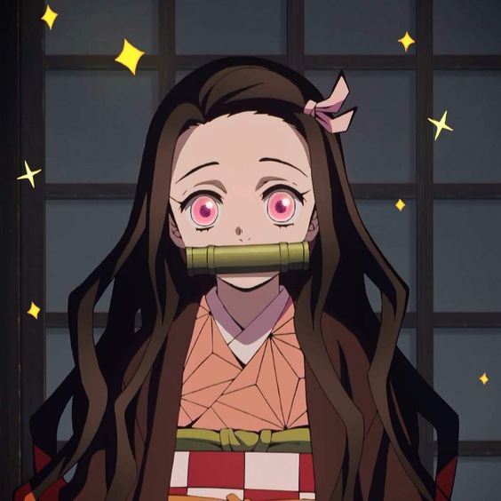 |
Nesuko Kamado |
Annie Rojas |
| 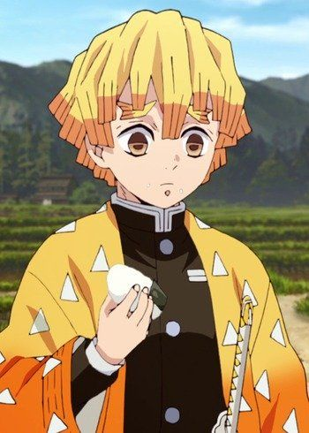 |
Zenitsu Agatsuma |
Annie Rojas |
 |
Inosuke Hashibira |
Uraz Huerta |
Pilares
| PERSONAJE |
NOMBRE DEL PERSONAJE |
NOMBRE DEL QUE DOBLA LA VOZ |
 |
Giyu Tomioka |
Marc Winslow |
| 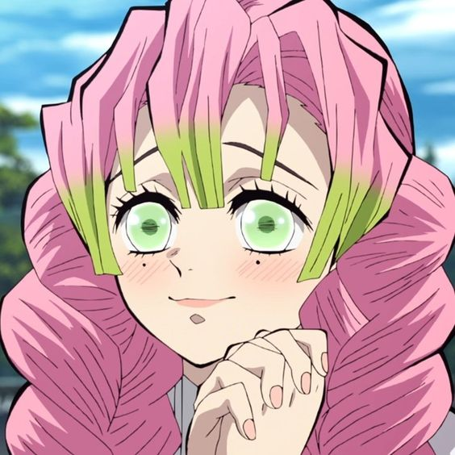 |
Mitsuri Kanroji |
Melissa Gedeón |
 |
Obanai Iguro |
Arturo Cataño |
 |
Sanemi Shinazugawa |
Galo Balcázar |
 |
Gyomey Himejima |
Gerardo Reyero |
 |
Kyojuro Rengoku |
Irwin Daayán |
 |
Tengen Uzui |
Alfredo Gabriel Basurto |
 |
Muichiro Tokito |
Armando Corona |
 |
Shinobu Kocho |
Cristina Hernández |
Cazadores
| PERSONAJE |
NOMBRE DEL PERSONAJE |
NOMBRE DEL QUE DOBLA LA VOZ |
 |
Kanao Tsuyuri |
Montserrat Aguilar |
 |
Genya Shinazugawa |
Osvaldo Trejo |
| 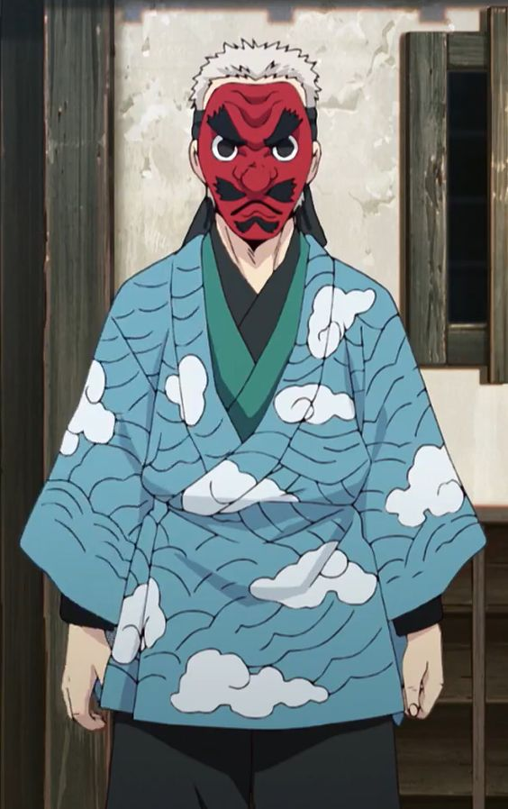 |
Sakonji Urikodaki |
Alejandro Villeli |
 |
Kagaya Ubuyashiki |
Idzi Dutkiewicz |
| 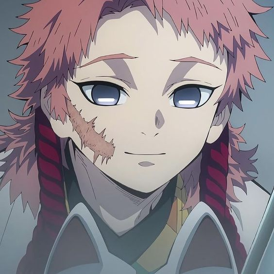 |
Sabito |
Dalí Jr. González |
 |
Makomo |
Pamela Mendoza |
Demonios
| PERSONAJE |
NOMBRE DEL PERSONAJE |
NOMBRE DEL QUE DOBLA LA VOZ |
 |
Muzan Kibutsuji |
Luis Leonardo Suárez |
| 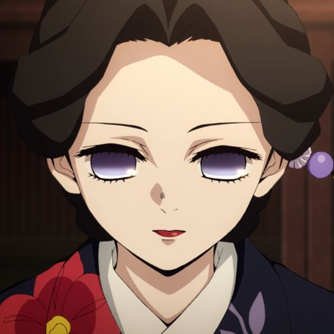 |
Tamayo |
Dulce Guerrero |
| 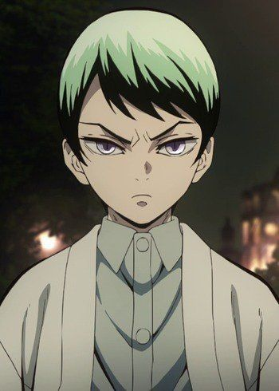 |
Yushiro |
Humberto Vélez Tercero |
 |
Susamaru |
Ileana Escalante |
 |
Yahaba |
Carlo Vázquez |
Lunas Inferiores
| PERSONAJE |
NOMBRE DEL PERSONAJE |
NOMBRE DEL QUE DOBLA LA VOZ |
| 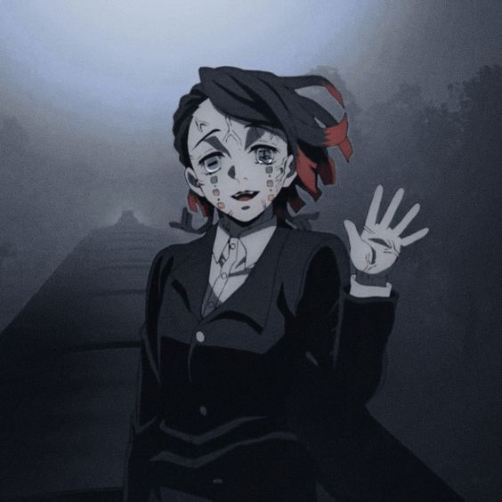 |
Enmu |
Arturo Castañeda |
| 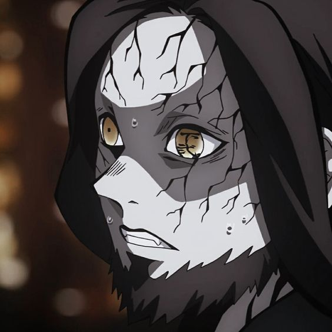 |
Rokuro |
Miguel de León |
| 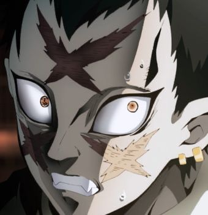 |
Wakuraba |
Brandon Montor |
| 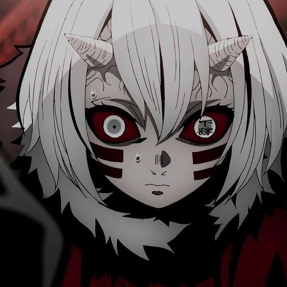 |
Mukako |
Dafne Gallardo |
| 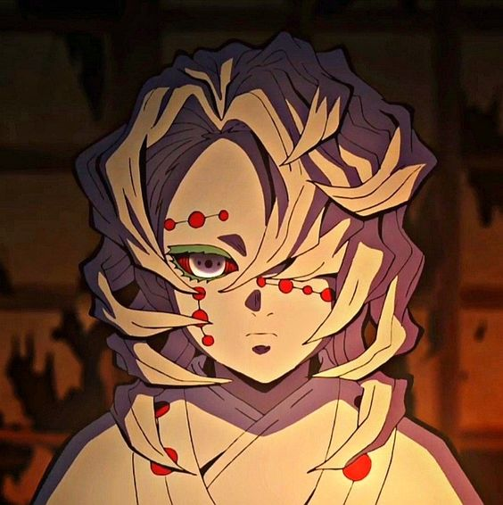 |
Rui |
Sebastián García |
 |
Kamanue |
Juan Carlos Revelo |
 |
Kyogai |
Enrique Cervantes |
Lunas Superiores
| PERSONAJE |
NOMBRE DEL PERSONAJE |
NOMBRE DEL QUE DOBLA LA VOZ |
 |
Kokushibo |
Octavio Rojas |
 |
Douma |
Alan Velazquez |
 |
Akasa |
Jose Antonio Toledano |
 |
Nakime |
Jocelyn Robles |
| 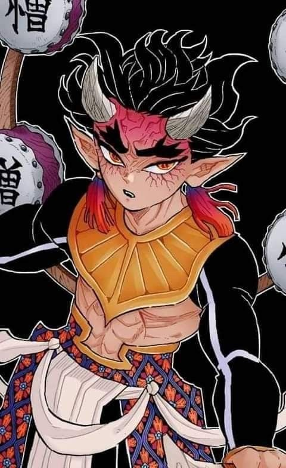 |
Hantengu |
Alberto Trujillo |
 |
Gyokko |
Raúl Anaya |
| 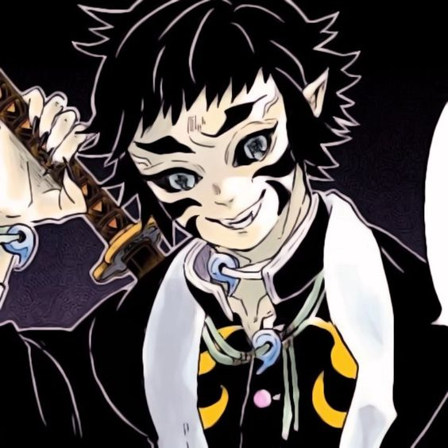 |
Kaigaku |
Luis Navarro |
| 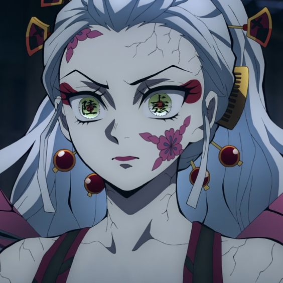 |
Daki |
Lupita Leal |
| 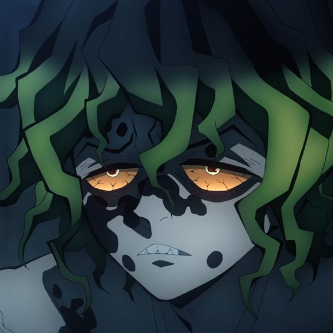 |
Gyutaro |
Alex Orozco |
1 2 3 4
Producto desarrollado para fines educativos en el Servicio Nacional de Aprendizaje SENA - Centro de Gestión de Mercados, Logística y Tecnologías de la Información - Tecnología en Producción de Multimedia - 2023